Информационная брошюра
Что это за акция?
Общественный фонд «АЛГОРИТ-МIX» совместно с Департаментом уголовно-исполнительной системы по Восточно-Казахстанской области организует акцию, приуроченную к празднованию Дня Победы. В рамках акции будет проведён конкурс плакатов под названием «Память поколений. Годы сквозь сердца», направленный на сохранение исторической памяти, уважение к подвигу ветеранов и воспитание патриотизма.
Акция проводится среди осуждённых, отбывающих наказание в учреждениях уголовно-исполнительной системы по Восточно-Казахстанской области. Участие в конкурсе плакатов «Память поколений. Годы сквозь сердца» позволит им выразить своё отношение к исторической памяти, отдать дань уважения подвигу ветеранов и через творчество осмыслить важность патриотизма и духовных ценностей. Кроме того, акция способствует развитию художественных навыков, самовыражению и социальной адаптации, создавая возможности для позитивных изменений в их мировоззрении и поведении.
Видео-презентация
Работники фонда «АЛГОРИТ-МIX» совместно с работниками ДУИС по ВКО
 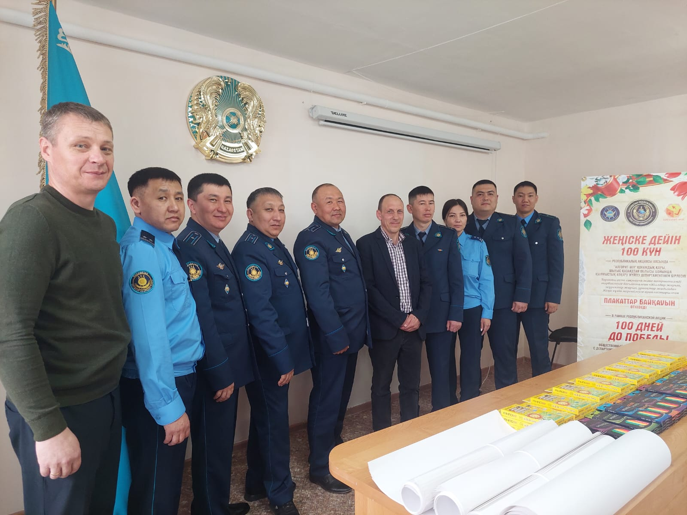
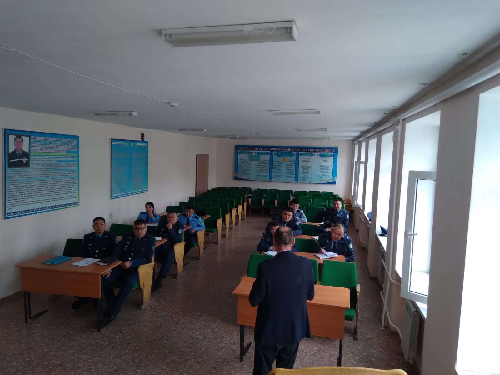
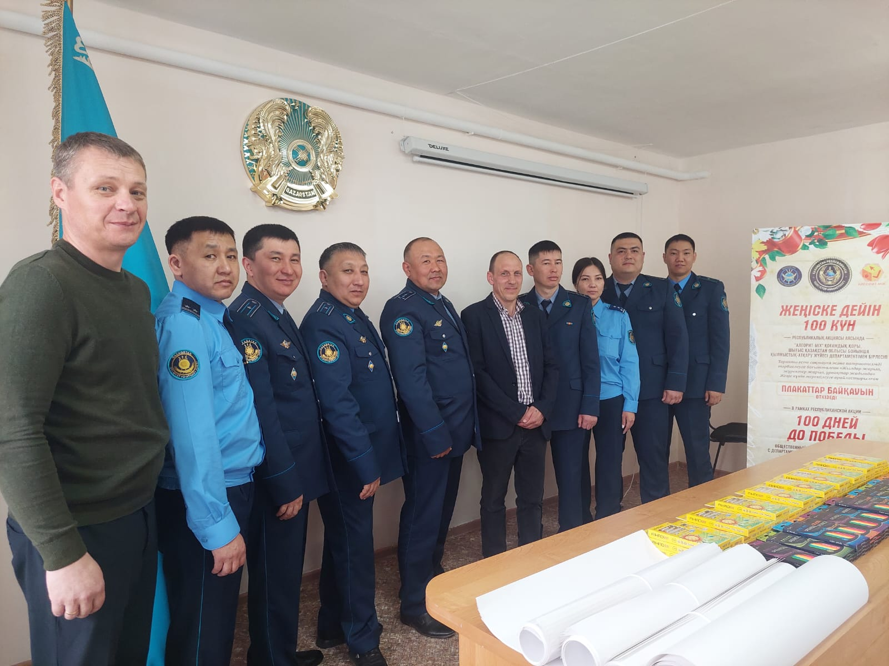
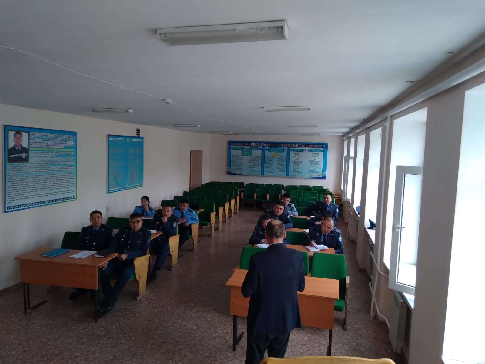
В настоящее время в учреждениях активно осуществляется творческий процесс по подготовке конкурсных работ.
РГУ Учреждение №73 УИС МВД РК
.jpg) 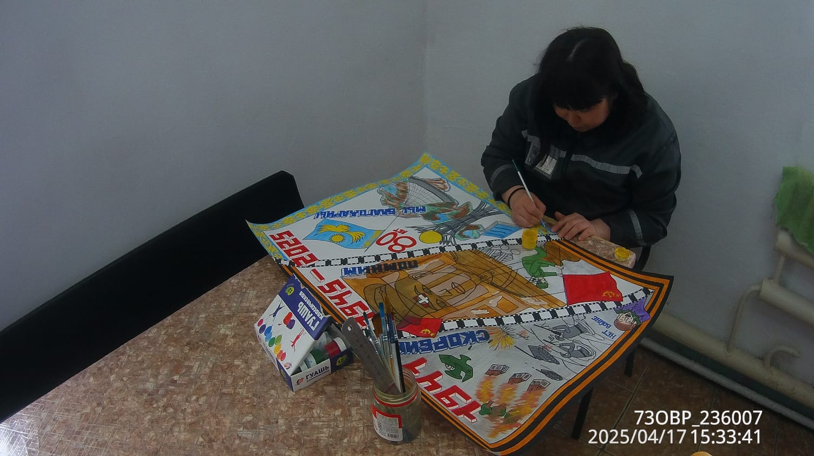
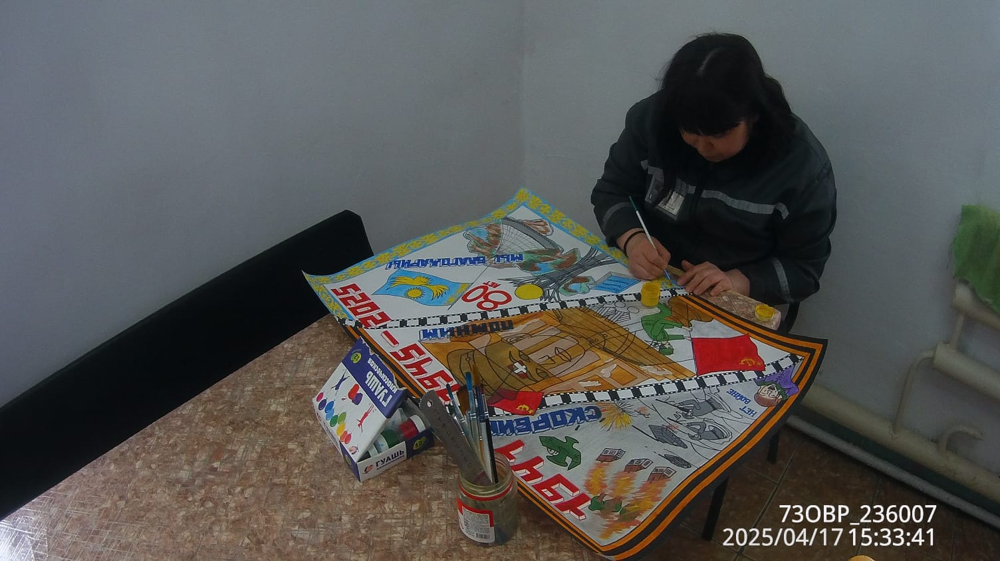
РГУ Учреждение №16 УИС МВД РК
 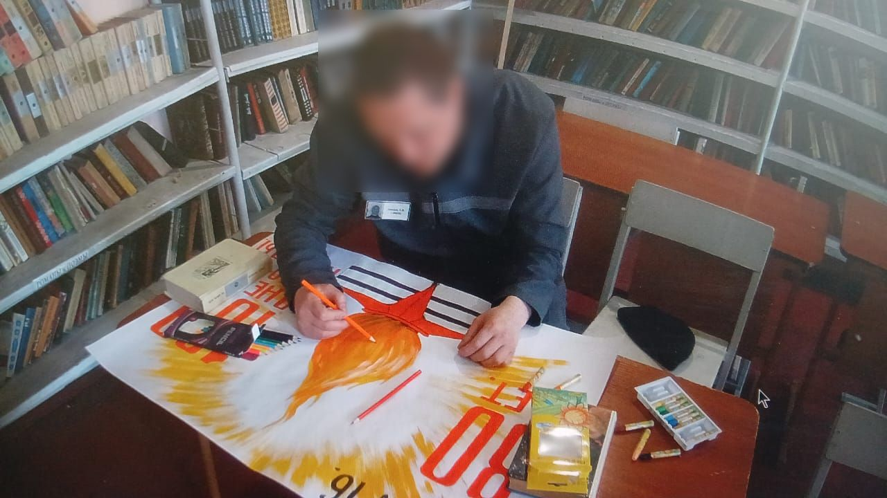
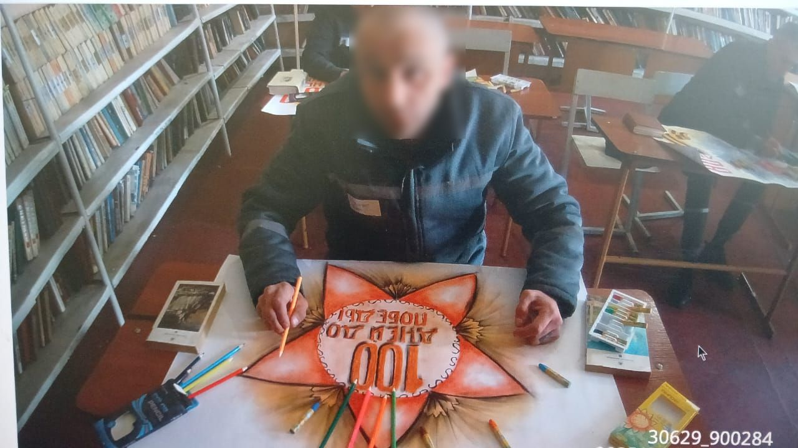
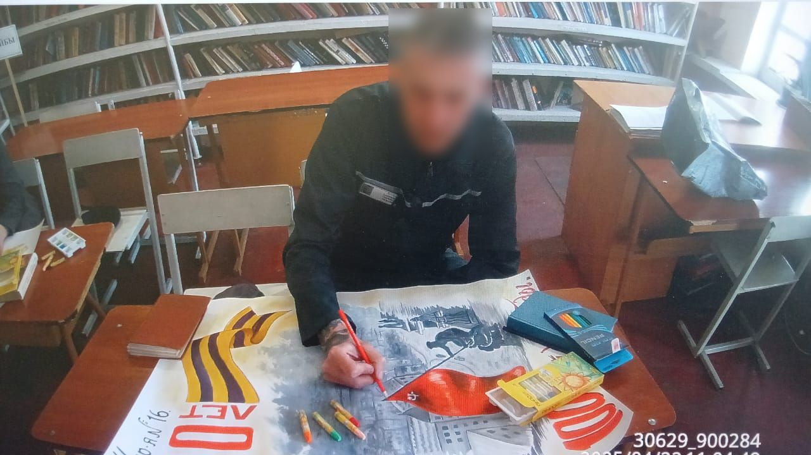
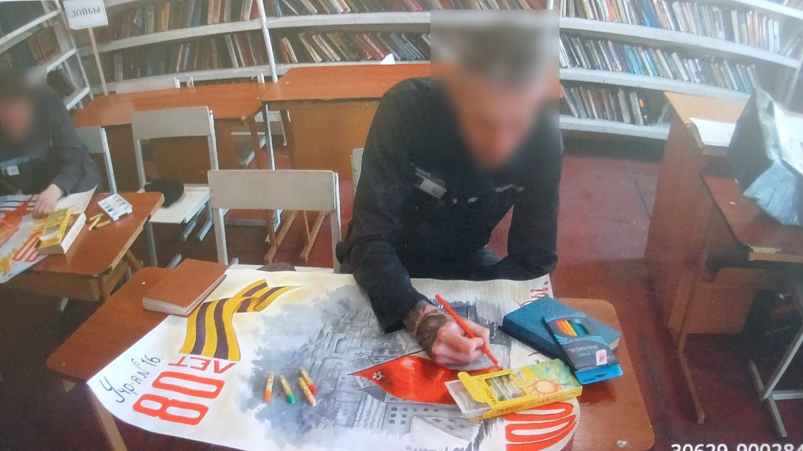
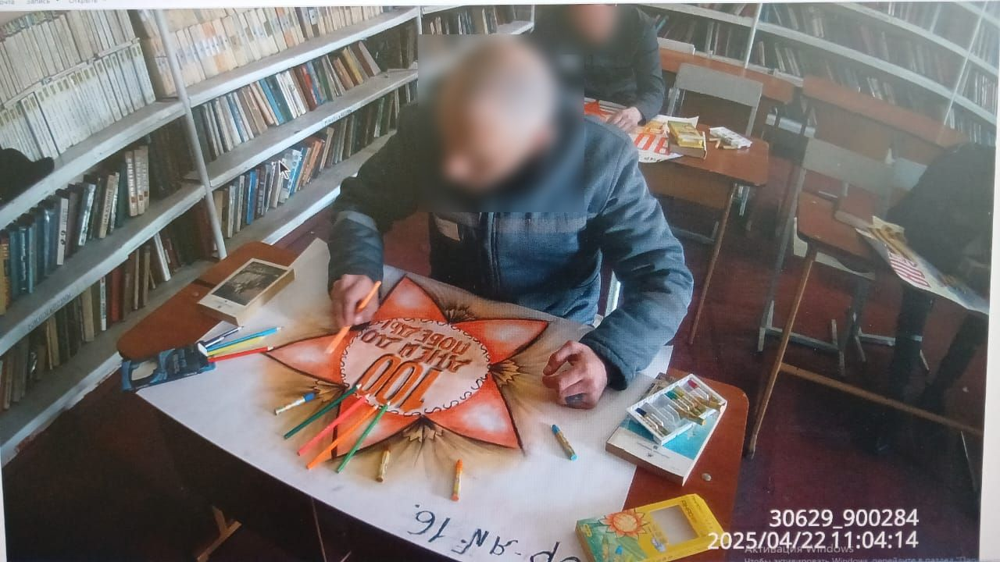
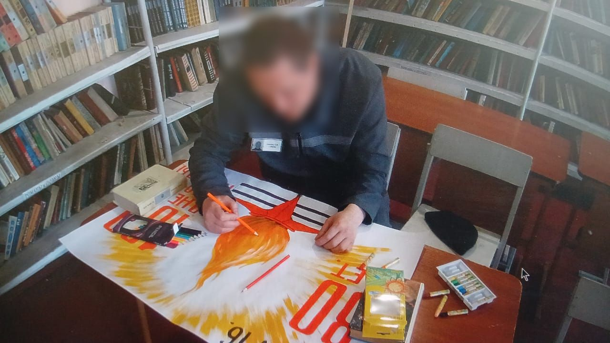
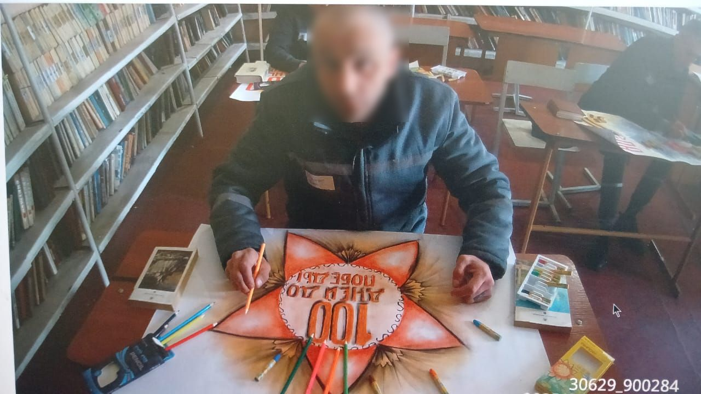
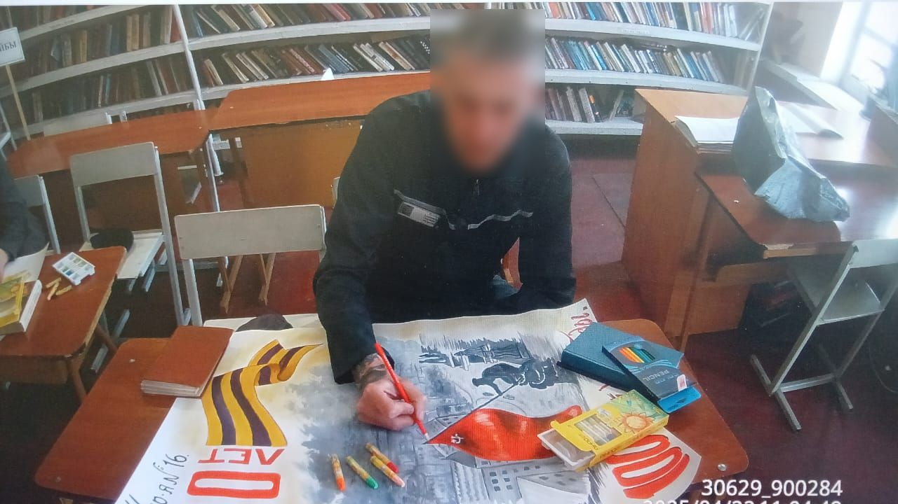
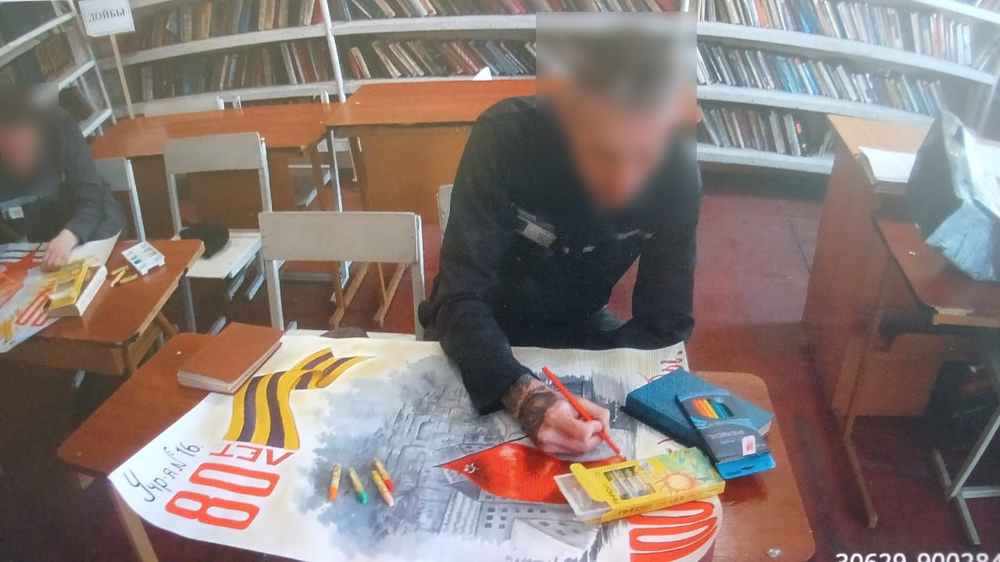
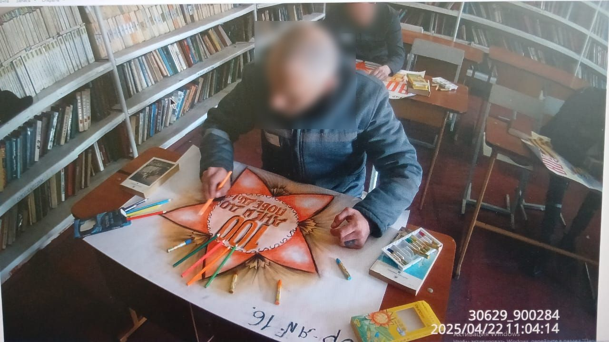
РГУ Учреждение №17 УИС МВД РК
РГУ Учреждение №22 УИС МВД РК
РГУ Учреждение №24 УИС МВД РК
РГУ Учреждение №18 УИС МВД РК
Творческий этап завершён
Яркие идеи, вдохновение и талант участников воплотились в уникальные плакаты. Теперь эстафету принимает конкурсная комиссия: начинается ответственная работа жюри.
Впереди — волнительное ожидание результатов. А призы и подарки, грамоты уже готовы — они с нетерпением ждут своих победителей! После озвучивания результатов, предусмотрено чаепитие.
Конкурс плакатов в РГУ Учреждении №24 и РГУ Учреждении №18
В РГУ Учреждении № 24 и РГУ Учреждениие № 18 прошёл первый конкурс плакатов, посвящённых празднованию 80-летия Победы. Этот конкурс объединил талантливых, неравнодушных участников, чьи работы стали искренним выражением благодарности и уважения к великому подвигу наших предков. На конкурс было представлено множество ярких, проникновенных плакатов, наполненных глубоким смыслом и трепетной памятью. Выбрать победителей оказалось непростой задачей — каждая работа достойна восхищения. Тем не менее, лучшие были определены. Поздравляем победителей и выражаем благодарность всем участникам за сохранение памяти о Великой Победе!
РГУ Учреждение №24 УИС МВД РК итоги конкурса


РГУ Учреждение №18 УИС МВД РК итоги конкурса


РГУ Учреждение №16 УИС МВД РК итоги конкурса

_censored.jpg)


Оцените акцию
Нам важно ваше мнение! Пожалуйста, оставьте отзыв: